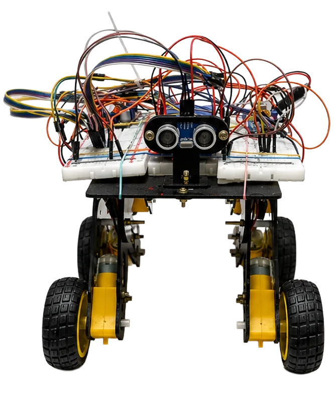
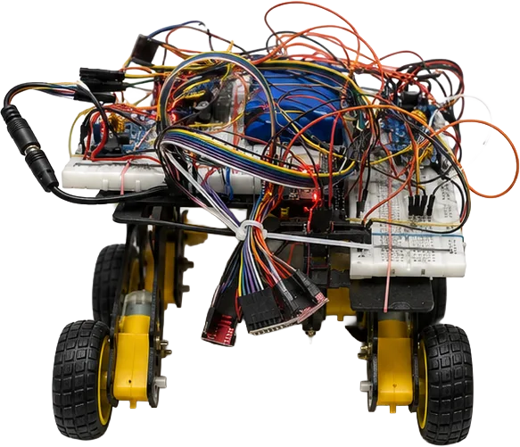
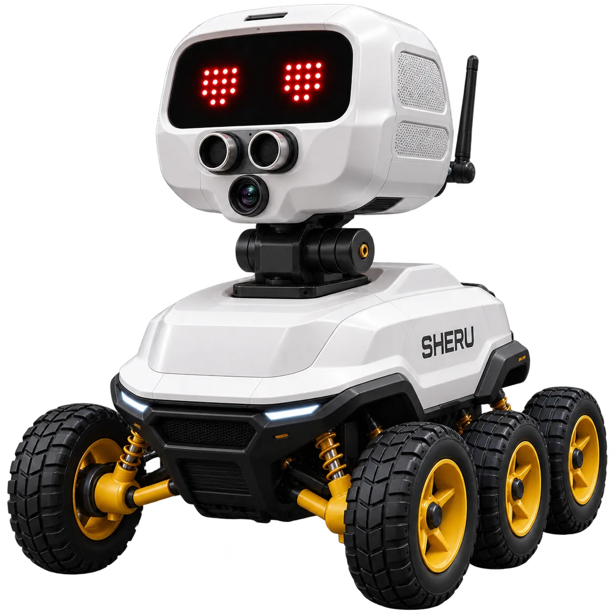

Current
Prototype
- Prototype hardware
- ESP32 control
- Motor movement
- Phone-based processing
- Wi-Fi communication
- LED matrix eyes
- Sensor integration
Independent R&D · In Development
SHERU begins with a simple question: how might AI feel more natural if it could exist as a small physical companion rather than only as an app or screen?
An offline-first AI family companion robot designed to sense, understand, decide and interact locally.
The vision is an offline-first family companion robot that prioritizes approachability, privacy-conscious interaction and emotional expressiveness.
SHERU is designed around locally processed intelligence rather than depending on cloud AI for its core capabilities — a physical, approachable AI presence built around family life, local intelligence and human-centered interaction.
The current prototype explores a phone-as-brain approach connected with ESP32 robotics control during testing — locally processed where possible, rather than depending on cloud AI for its core capabilities.
Fig. 01 — System Diagram
Family context → phone-as-brain prototype → ESP32 robotics control → movement, sensors, LED eyes. Technical architecture visual coming in the next R&D documentation pass. No unpublished technical architecture is implied.
Prototype hardware, ESP32 control, motor movement, phone-based processing, Wi-Fi communication, LED matrix eyes and sensor integration — documented honestly, mid-build.


Current
In Development
Future
06 — Envisioned Form

Fig. 04
Technical architecture visual — coming in next R&D documentation pass.
Fig. 05
Detailed hardware documentation — currently in development.
Fig. 06
Additional engineering documentation will be added as the prototype evolves.
Physical AI requires balancing product thinking, emotional design, interaction clarity and technical constraints without overstating what the prototype can do.
Future direction includes expanded local intelligence, memory, richer family interaction, expanded personality and additional physical interaction.
Vision, face recognition, mapping, navigation and autonomous interaction remain active research areas — not presented as completed capabilities.